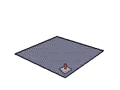

Push/Pull Tool
Push and pull Face entities to add or subtract volume from your 3d models.
This custom version of the tool tries to maintain quadrilaterals whenever
possible and not leave internal faces.
Tool Operation
- Hover cursor to select a face.
- Move cursor to push or pull face into 3D form.
- Click to finish push/pull operation.
- Esc = Cancel operation.
Pre-Pick Tool Operation
- Use Select tool to select a face.
- Activate Push/Pull tool.
- Click once to set start point of Push/Pull.
- Click to finish push/pull.
- Esc = Cancel operation and clear selection.
Modifier Keys
- Ctrl = Toggles creating new starting face.